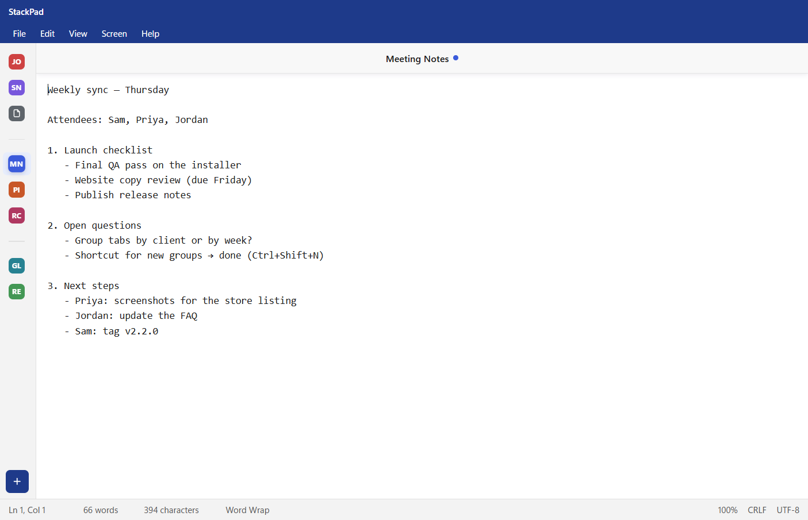

Windows
Windows 10 and 11, 64-bit
Download installerWindows may say "Windows protected your PC". Click More info → Run anyway. Why?
Get it from Microsoft StoreFree notepad for Windows & Linux
StackPad stacks your tabs in a slim rail down the side, sorts them into groups, and remembers every one, even the ones you never saved. Close it mid-sentence and pick up exactly where you left off.

Why vertical tabs
A tab strip across the top squeezes every title until they're unreadable. A rail down the side has room for all of them, and it stays out of your way while you write.
Never lose a note
Most notepads only keep what you saved. StackPad keeps everything, as you type, so you never have to think about it.
Quit, restart or update, and every tab returns with its text, even tabs you never saved to a file.
Even the last keystrokes before you close the window are written to disk.
Files are written in full before they replace the old version, so a crash or power cut can't leave a half-saved document.
If another program changes a file you have open, StackPad reloads it, or asks before replacing your unsaved changes.
Features
Name a group, drag tabs into it, fold it away. Drag groups to reorder them.
Snap to a 4:5 or 16:9 window, or go Freeform and StackPad remembers your size and position.
Live "3 of 12" count, match case, whole word, and Replace All you can undo.
Line endings (CRLF or LF) and encodings (UTF-8, UTF-16, ANSI) are kept exactly when you save.
Follows your system theme, or pick one. Opens straight into it, with no white flash.
New versions download quietly and install when you close StackPad. You can turn this off.
StackPad vs. Windows Notepad
Both are plain-text editors with tabs, find and replace, themes and session restore. Here's where StackPad is different.
| Area | Windows Notepad | StackPad |
|---|---|---|
| Tab layout | Horizontal strip across the top | Vertical rail that opens over the editor, so your text never shifts |
| Organising tabs | One flat row | Named groups you can fold away, plus a colour badge for every tab |
| Window size | Resize by hand | One-click 4:5 and 16:9 presets, or Freeform |
| Status bar | Position, characters, zoom, line endings, encoding | The same, plus a live word count |
| Online features | Microsoft account and AI features | None: no account, no AI, no telemetry |
| Runs on | Windows | Windows and Linux |
| Source code | Closed | Open source (MIT): read it, change it, build it yourself |
StackPad has no accounts, no analytics and no AI. It never uploads your notes. Its only connection to the internet is an update check, which you can switch off. Don't take our word for it: the source code is public.
Keyboard shortcuts
The Notepad shortcuts you already know, plus a few new ones. On Linux they're the same.
Download
Free, about a minute to install, and it updates itself from then on.
Windows 10 and 11, 64-bit
Download installerWindows may say "Windows protected your PC". Click More info → Run anyway. Why?
Get it from Microsoft Store64-bit, most distributions
Download AppImage Download .debPrefer to build it yourself? Build from source. Looking for an older version? See all releases and the release notes.
FAQ
Yes. No trial, no "pro" version, no ads and no data collection. It's open source under the MIT license, so it will stay free.
Only if you want it to. StackPad installs alongside Notepad and adds itself to Open with for .txt files. To make it the default, right-click a .txt file → Open with → Choose another app, pick StackPad and tick Always.
On your computer only: %APPDATA%\stackpad on Windows and ~/.config/stackpad on Linux. Files you save with Save As live wherever you put them. Uninstalling StackPad keeps your notes unless you delete that folder.
Windows SmartScreen shows "Windows protected your PC" for any app that isn't code-signed. Signing certificates cost money every year, and StackPad is a free project without one. The warning means Windows doesn't know the publisher. It doesn't mean anything was found in the file. Click More info → Run anyway to install; you only see it once. Every installer is built in public by GitHub Actions from the open source code, so anyone can check exactly what went into it.
StackPad checks GitHub for a new version in the background. On Windows and the Linux AppImage, it downloads the update and installs it the next time you close the app, or straight away if you choose "Restart now". The .deb version tells you when an update is out. You can turn checking off under Help → Check for Updates Automatically.
Not as a download. StackPad can run on macOS from the source code, but Windows and Linux are the supported platforms.
StackPad is a plain-text notepad. It opens any text file up to 50 MB, but it doesn't do syntax highlighting. For programming, a code editor is the better tool.
In StackPad, choose Help → Report a Problem: it fills in your version for you. Or open an issue on GitHub.